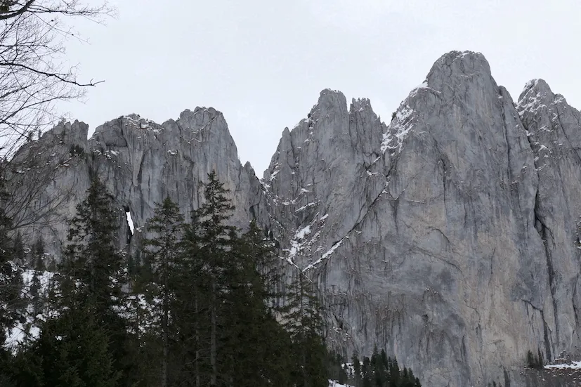
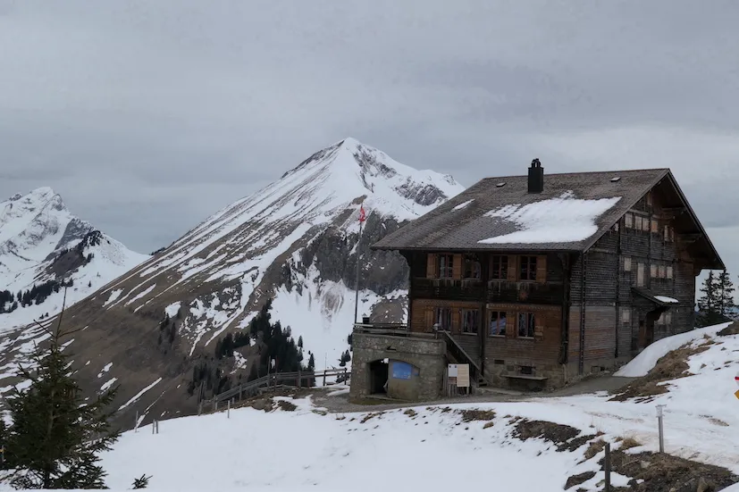
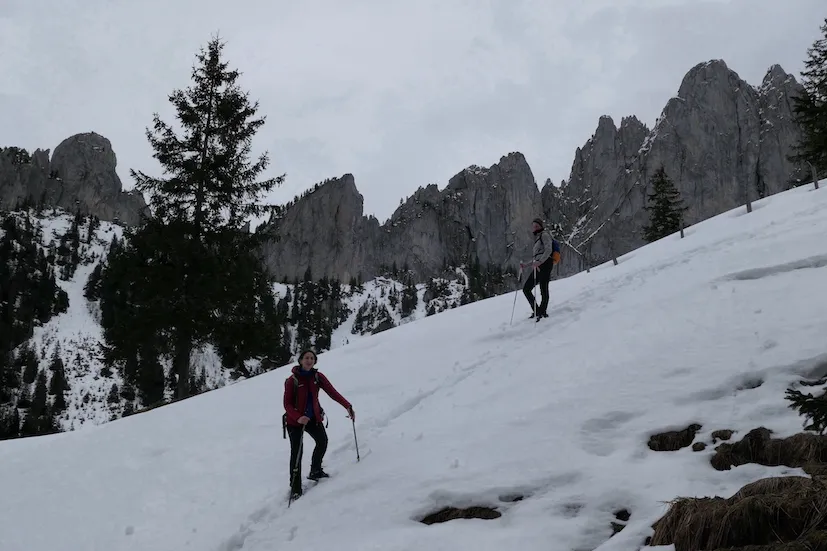

Suite à une demande de particulier, j'ai fait découvrir la région des Gastlosen, dans le canton de Fribourg. C’était l’occasion de sortir les raquettes à neige ❄️ pour monter au Chalet du Soldat, construit au début du XXe siècle. Il était à l’origine un poste de garde pour les soldats suisses. Aujourd’hui, la cabane a été transformée en un refuge montagnard accessible aux randonneurs, tout en conservant son caractère historique. 🏠 Ce lieu riche de son histoire était parfait pour une pause méritée. ☕ Durant cette journée découverte, nous avons observé des traces de la faune sauvage, 🐇 les aroles tant aimés des becs croisés des sapins 🦜 et découvert quelques secrets de cette fabuleuse chaîne de montagne.


